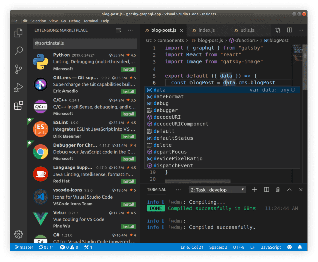
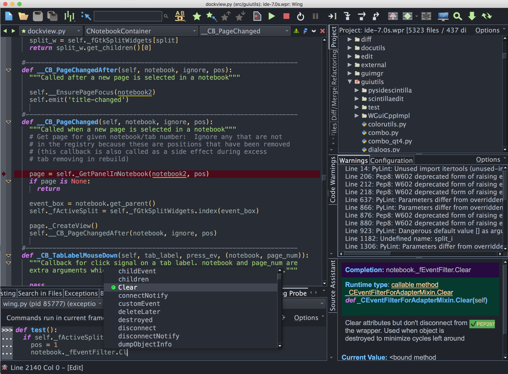
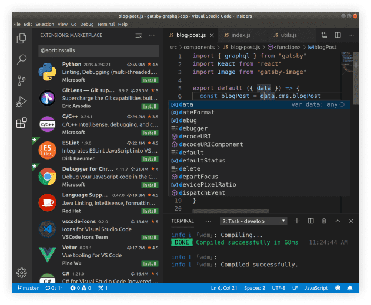
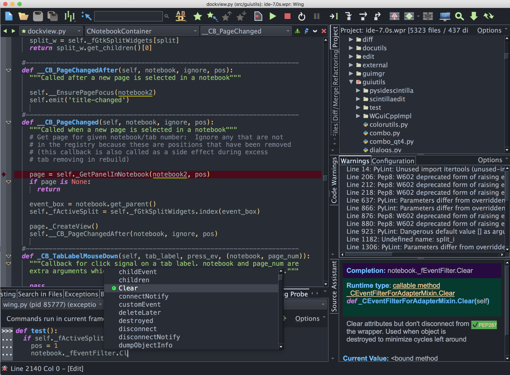

集成开发环境下载.
Pycharm.
PyCharm是一种Python IDE（Integrated Development Environment，集成开发环境），带有一整套可以帮助用户在使用Python语言开发时提高其效率的工具，比如调试、语法高亮、项目管理、代码跳转、智能提示、自动完成、单元测试、版本控制。此外，该IDE提供了一些高级功能，以用于支持Django框架下的专业Web开发。
VScode.
Visual Studio Code（简称“VS Code”）是Microsoft在2015年4月30日Build开发者大会上正式宣布一个运行于 Mac OS X、Windows和 Linux 之上的，针对于编写现代Web和云应用的跨平台源代码编辑器，可在桌面上运行，并且可用于Windows，macOS和Linux。它具有对JavaScript，TypeScript和Node.js的内置支持，并具有丰富的其他语言（例如C++，C＃，Java，Python，PHP，Go）和运行时（例如.NET和Unity）扩展的生态系统。
Wingpro.
wing pro正式版是一款功能非常多的编程软件，wing pro(Python开发环境)全名Wing IDE Pro,软件基于python编程语言开发环境，拥有非常多python ide的功能，所以软件也支持开发python项目，软件小巧简单，就算运行复杂代码也不会超过200M内存，适合一些性能比较差的电脑，wing pro支持调试到方案的落地，是一款非常强大的编程软件。
 


